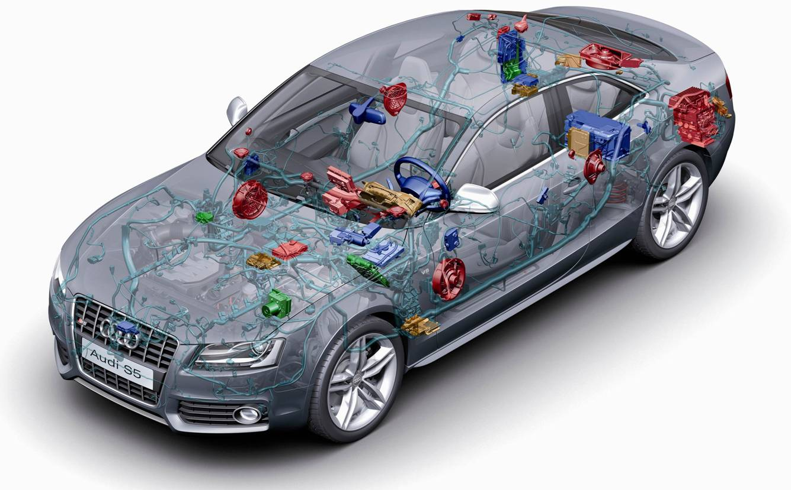

Automotive Systems Engineering ist ein Studiengang, der an einigen Hochschulen angeboten wird. Der Name setzt sich aus Automotive und Systems Engineering zusammen. Ein zentraler Punkt des System-Ingenieurs bildet das interdisziplinaere Denken. Die Taetigkeit eines System-Ingenieurs im Automotive-Bereich vereint in sich alle relevanten Themengebiete eines modernen Fahrzeugingenieurs und beinhaltet profunde Kenntnisse u. a. in:
Systemtheorie / Ausfallsicherheit / Mathematik / Physik / Chemie / Biologie / Werkstoff- und Materialwissenschaften / ...
Kfz-Technik (allgemein)
Elektrik / Elektronik (Tools: PSpice, ...)
Mechanik / Mechatronik (Tools:CATIA, ...)
Mess- und Regelungstechnik (Tools: Matlab / Simulink, LabVIEW, ...)
Simulationstechnik (Tools: Matlab / Simulink & Stateflow, ...)
Programmiersprachen und -Werkzeuge (Tools: objektorientiert (C++ & klassisch C, Assembler), ...)
Betriebssysteme / Betriebssystemkerne / Echtzeitbetriebssystemkerne
Softwaretechnik (Softwareengineering) und CASE-Werkzeuge (Tools: objektorientiert (UML, ...) & klassisch (Struktogramme, Zustandsuebergangsdiagramme, ...), ...)
Mikroprozessortechnik / Mikrocontrollertechnik
Embedded Systems / Embedded Real-Time Systems
Nachrichtentechnik / Feldbussysteme / Optische Technologien / ...
Sensor- und Smart-Sensor- Technologien
Eine besondere Herausforderung besteht darin, unbedingt alle diese Gebiete aus der Vogelperspektive ("Top down") ueberschauen zu koennen, also den Blick fuer das Wesentliche zu haben und sie dennoch bis ins Detail souveraen zu beherrschen.
